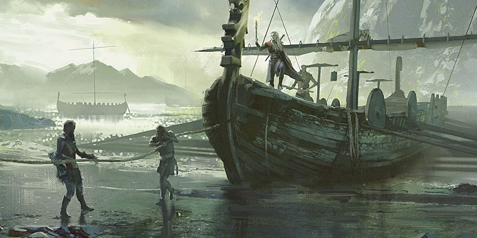

Des navires et de la mer
Ce document fournit des règles optionnelles pour utiliser des navires en jeu, gérer les officiers et l'équipage nécessaires à la conduite d'un navire et posséder un navire. La mer offre de nombreuses récompenses mais présente aussi des dangers aux personnes en quête d'aventures qui sont prêtes à affronter les vagues.
Bloc de stat des navires
Le bloc de stat d'un navire donne les détails de jeu à utiliser lorsqu'un navire est impliqué dans un combat ou dans d'autres situations dans lesquelles ses capacités défensives et offensives sont pertinentes. Le bloc de stat comporte trois parties principales : les statistiques de base, les options d'action et les composants du navire. Les navires ne peuvent entreprendre aucune action seuls. Sans travail de son équipage, un navire risque de dériver, de s'arrêter ou d'être hors contrôle.
Statistiques de base
Taille
La plupart des navires sont de taille G, TG ou Gig. La catégorie de taille d'un navire est déterminée par sa longueur ou sa largeur, selon la valeur la plus grande. Par exemple, un navire mesurant 3 mètres de long et 6 mètres de large utiliserait la catégorie de taille qui a une largeur de 6 mètres, ce qui signifie que le navire est de taille Gig.
Espace
Un navire n'occupe pas un espace carré, sauf indication contraire dans son bloc de stat. Par exemple, un navire mesurant 6 mètres de long et 3 mètres de large occupe un espace de 6 x 3 mètres. Un navire ne peut pas se déplacer dans un espace trop petit pour le recevoir. S'il tente de le faire, il entre en collision, comme décrit plus loin dans la section « Collision ».
Capacité
Le bloc de stat d'un navire indique le nombre de créatures et la quantité de cargaison qu'il peut transporter. Les créatures comprennent à la fois l'équipage requis pour faire fonctionner le navire et tous les passagers qui pourraient être à bord. Les passagers peuvent inclure des marins qui repoussent les assaillants et mènent l'attaque contre des monstres et des navires ennemis.
Rythme de déplacement
Le rythme de déplacement d'un navire détermine la distance qu'il peut parcourir par heure et par jour. Les composants liés au mouvement d'un navire (décrits plus loin dans le bloc de stat) déterminent la distance à laquelle le navire peut se déplacer à chaque tour.
Valeurs de caractéristiques
IMMUNITÉS TYPIQUES
Si vous créez votre propre navire, il est généralement immunisé contre les poisons et les dommages psychiques. Ceux fabriqués en métal ou en pierre sont également immunisés contre les dommages nécrotiques. Ils sont également généralement immunisés contre les conditions suivantes : aveuglé, charmé, assourdi, épuisement, effrayé, incapable d'agir, paralysé, pétrifié, empoisonné, à terre, étourdi et inconscient.
Un navire possède les six valeurs de caractéristiques (Force, Dextérité, Constitution, Intelligence, Sagesse et Charisme) et les modificateurs correspondants. La Force d'un navire représente sa taille et son poids. La Dextérité représente la facilité de conduire le navire. La Constitution d'un navire couvre sa durabilité et la qualité de sa construction. Les navires ont généralement 0 en Intelligence, Sagesse et Charisme. Si un navire a un 0 dans une valeur, il échoue automatiquement à tout jet de caractéristique ou de sauvegarde utilisant cette valeur.
Vulnérabilités, résistances et immunités
Les vulnérabilités, résistances et immunités d'un navire s'appliquent à tous ses composants, sauf indication contraire dans le bloc de stat.
Composants
Un navire est fait de différents composants :
Coque. La coque d'un navire est sa base, sur laquelle sont montés les autres composants.
Contrôle. Un composant de contrôle est utilisé pour diriger un navire.
Mouvement. Un composant de mouvement est l'élément du navire qui lui permet de se déplacer, par exemple un ensemble de voiles ou de rames.
Arme. Un navire pouvant être utilisé au combat possède un ou plusieurs composants d'armes, chacun opérant séparément.
Un composant de navire peut avoir des règles spéciales, décrites dans le bloc de stat.
Classe d'armure
Un composant a une Classe d'armure. Sa CA est censée refléter sa taille, les matériaux utilisés pour sa construction et tout blindage ou armure utilisé pour augmenter sa résistance.
Points de vie
Un composant de navire est détruit et devient inutilisable lorsqu'il tombe à 0 point de vie. Un navire est détruit si sa coque est détruite. Un composant de navire n'a pas de dés de vie.
Seuil de dégâts
Si un composant de navire a un seuil de dégâts, celui-ci apparaît après ses points de vie. Un composant est immunisé contre tous les dommages sauf s'il prend un nombre de dégâts égal ou supérieur à son seuil de dégâts, auquel cas il subit les dégâts normalement. Tout dégât qui n'atteint pas ou ne dépasse pas le seuil est considéré comme superficiel et ne réduit pas les points de vie du composant.
Actions
Cette partie du bloc de stat spécifie ce que le navire peut faire à son tour, en utilisant ses actions spéciales plutôt que les actions utilisées par les créatures. Notez qu''il compte sur ses actions pour bouger ; il n'a pas d'autre mouvement.
Exemples de blocs de stat
Voici des exemples de blocs de stat de navires.
Navire volant
Véhicule de taille Gig (24 m x 6 m)
Capacité (créatures) 20 membres d'équipage, 10 passagers
Capacité (charge) 1 tonne
Rythme de déplacement 13,5 km par heure (324 km par jour)
FOR DEX CON INT SAG CHA
14 (+2) 14 (+2) 12 (+1) 0 0 0
Immunités aux dégâts poison, psychique
Immunités aux conditions aveuglé, charmé, assourdi, épuisement, effrayé, incapable d'agir, paralysé, pétrifié, empoisonné, à terre, étourdi, inconscient
Coque
Classe d'armure 13
Points de vie 300
Contrôle : gouvernail
Classe d'armure 16
Points de vie 50
Se déplace à la vitesse de son moteur élémentaire, avec un virage de 90 degrés max par tour. Si le gouvernail est détruit, le navire volant ne peut plus virer.
Mouvement : moteur élémentaire
Classe d'armure 18
Points de vie 100 ; –6 m à la vitesse pour chaque tranche de 25 dégâts reçus
Locomotion (air) pouvoir d'un élementaire, vitesse 24 m. Si le moteur est détruit, le navire s'écrase immédiatement.
Armes : balistes (4)
Classe d'armure 15
Points de vie 50 chacune
Attaque à distance avec une arme: +6 au toucher, portée 36/144 m, une cible. Touché : 16 (3d10) dégâts perforants.
Actions
À son tour, le navire volant peut utiliser son gouvernail pour se déplacer en utilisant son moteur élémentaire. Il peut aussi utiliser ses balistes. S'il n'a plus que la moitié de son équipage ou moins, il ne peut tirer qu'avec deux des balistes.
Galère
Véhicule de taille Gig (39 m x 6 m)
Capacité (créatures) 80 membres d'équipage, 40 passagers
Capacité (charge) 150 tonnes
Rythme de déplacement 6 km par heure (144 km par jour)
FOR DEX CON INT SAG CHA
24 (+7) 4 (-3) 20 (+5) 0 0 0
Immunités aux dégâts poison, psychique
Immunités aux conditions aveuglé, charmé, assourdi, épuisement, effrayé, incapable d'agir, paralysé, pétrifié, empoisonné, à terre, étourdi, inconscient
Coque
Classe d'armure 15
Points de vie 500 (seuil de dégâts 20)
Contrôle : gouvernail
Classe d'armure 16
Points de vie 50
Se déplace à la vitesse d'un de ses composants de mouvement, avec un virage de 90 degrés max par tour. Si le gouvernail est détruit, la galère ne peut plus virer.
Mouvement : voiles
Classe d'armure 12
Points de vie 100 ; -3 m à la vitesse pour chaque tranche de 25 dégâts reçus
Locomotion (eau) voiles, vitesse 10,50 m ; 4,50 m à contre-vent ; 15 m avec le vent dans le dos
Mouvement : rames
Classe d'armure 12
Points de vie 100 ; -1,50 m à la vitesse pour chaque tranche de 25 dégâts reçus
Locomotion (eau) rames, vitesse 9 m
Armes : balistes (4)
Classe d'armure 15
Points de vie 50 chacune
Attaque à distance avec une arme: +6 au toucher, portée 36/144 m, une cible. Touché : 16 (3d10) dégâts perforants.
Armes : mangonneaux (2)
Classe d'armure 15
Points de vie 100 chacun
Attaque à distance avec une arme: +5 au toucher, portée 60/240 m (ne peut toucher une cible à 18 m ou moins), une cible. Touché : 27 (5d10) dégâts contondants.
Arme : bélier
Classe d'armure 20
Points de vie 100 (seuil de dégâts 10)
La galère a un avantage aux jets de sauvegarde quand elle entre en collision avec une créature ou un objet, et tous les dégâts qu'elle subit sont alors appliqués au bélier. Ces avantages ne s'appliquent pas si une créature ou un objet s'écrase dans la galère.
Actions
À son tour, la galère peut se déplacer à l'aide de son gouvernail. Elle peut aussi utiliser ses balistes et ses mangonneaux. Si elle n'a plus que la moitié de son équipage ou moins, elle se déplace à la moitié de sa vitesse et ne peut utiliser que la moitié de ses armes.
Bateau à fond plat
Véhicule de taille Gig (18 m x 6 m)
Capacité (créatures) 3 membres d'équipage, 4 passagers
Capacité (charge) 0,5 tonne
Rythme de déplacement 4,5 km par heure (108 km par jour)
FOR DEX CON INT SAG CHA
16 (+3) 7 (-2) 13 (+1) 0 0 0
Immunités aux dégâts poison, psychique
Immunités aux conditions aveuglé, charmé, assourdi, épuisement, effrayé, incapable d'agir, paralysé, pétrifié, empoisonné, à terre, étourdi, inconscient
Coque
Classe d'armure 15
Points de vie 100 (seuil de dégâts 10)
Contrôle : gouvernail
Classe d'armure 12
Points de vie 50
Se déplace à la vitesse d'un de ses composants de mouvement, avec un virage de 90 degrés max par tour. Si le gouvernail est détruit, le bateau à fond plat ne peut plus virer.
Mouvement : voiles
Classe d'armure 12
Points de vie 100; –1,50 m à la vitesse pour chaque tranche de 20 dégâts reçus
Locomotion (eau) voiles, vitesse 7,50 m ; 4,50 m à contre-vent ; 10,50 m avec le vent dans le dos
Mouvement : rames
Classe d'armure 12
Points de vie 100; -1,50 m à la vitesse pour chaque tranche de 25 dégâts reçus
Locomotion (eau) rames, vitesse 6 m
Arme : baliste
Classe d'armure 15
Points de vie 50
Attaque à distance avec une arme: +6 au toucher, portée 36/144 m, une cible. Touché : 16 (3d10) dégâts perforants.
Les bateaux à fond plat n'ont généralement une baliste que lorsqu'ils sont équipés pour le combat.
Actions
À son tour, le bateau peut se déplacer à l'aide de son gouvernail. Il peut aussi utiliser ses balistes s'il en est équipé. S'il n'a plus que la moitié de son équipage ou moins, il se déplace à la moitié de sa vitesse et ne peut utiliser ses balistes.
Drakkar
Véhicule de taille Gig (21 m x 6 m)
Capacité (créatures) 40 membres d'équipage, 100 passagers
Capacité (charge) 10 tonnes
Rythme de déplacement 7,5 km par heure (180 km par jour)
FOR DEX CON INT SAG CHA
20 (+5) 6 (-2) 17 (+3) 0 0 0
Immunités aux dégâts poison, psychique
Immunités aux conditions aveuglé, charmé, assourdi, épuisement, effrayé, incapable d'agir, paralysé, pétrifié, empoisonné, à terre, étourdi, inconscient
Coque
Classe d'armure 15
Points de vie 300 (seuil de dégâts 15)
Contrôle : gouvernail
Classe d'armure 16
Points de vie 50
Se déplace à la vitesse d'un de ses composants de mouvement, avec un virage de 90 degrés max par tour. Si le gouvernail est détruit, le drakkar ne peut plus virer.
Mouvement : voiles
Classe d'armure 12
Points de vie 100 ; -3 m à la vitesse pour chaque tranche de 25 dégâts reçus
Locomotion (eau) voiles, vitesse 13,50 m ; 4,50 m à contre-vent ; 18 m avec le vent dans le dos
Mouvement : rames
Classe d'armure 12
Points de vie 100 ; -1,50 m à la vitesse pour chaque tranche de 25 dégâts reçus
Locomotion (eau) rames, vitesse 6 m
Actions
À son tour, le drakkar peut se déplacer à l'aide de son gouvernail. S'il n'a plus que la moitié de son équipage ou moins, il se déplace à la moitié de sa vitesse.
Barque
Véhicule de taille G (3 m x 1,50 m)
Capacité (créatures) 2 membres d'équipage, 2 passagers
Capacité (charge) 0,25 tonne
Rythme de déplacement 4,5 km par heure (36 km par jour)
FOR DEX CON INT SAG CHA
11 (+0) 8 (-1) 11 (+0) 0 0 0
Immunités aux dégâts poison, psychique
Immunités aux conditions aveuglé, charmé, assourdi, épuisement, effrayé, incapable d'agir, paralysé, pétrifié, empoisonné, étourdi, inconscient
Coque
Classe d'armure 11
Points de vie 50
Contrôle et mouvement : rames
Classe d'armure 12
Points de vie 25
Locomotion (eau) rames, vitesse 4,50 m
Se déplace de sa vitesse, avec un virage de 90 degrés max par tour. Si les rames sont détruites, la vitesse de la barque est de 0.
Actions
À son tour, la barque peut se déplacer à l'aide de ses rames.
Bateau à voiles
Véhicule de taille Gig (24 m x 6 m)
Capacité (créatures) 30 membres d'équipage, 20 passagers
Capacité (charge) 100 tonnes
Rythme de déplacement 7,5 km par heure (180 km par jour)
FOR DEX CON INT SAG CHA
20 (+5) 7 (−2) 17 (+3) 0 0 0
Immunités aux dégâts poison, psychique
Immunités aux conditions aveuglé, charmé, assourdi, épuisement, effrayé, incapable d'agir, paralysé, pétrifié, empoisonné, à terre, étourdi, inconscient
Coque
Classe d'armure 15
Points de vie 300 (seuil de dégâts 15)
Contrôle : gouvernail
Classe d'armure 18
Points de vie 50
Se déplace à la vitesse de ses voiles, avec un virage de 90 degrés max par tour. Si le gouvernail est détruit, le bateau ne peut plus virer.
Mouvement : voiles
Classe d'armure 12
Points de vie 100 ; -1,50 m à la vitesse pour chaque tranche de 25 dégâts reçus
Locomotion (eau) voiles, vitesse 13,50 m ; 4,50 m à contre-vent ; 18 m avec le vent dans le dos
Arme : baliste
Classe d'armure 15
Points de vie 50
Attaque à distance avec une arme: +6 au toucher, portée 36/144 m, une cible. Touché : 16 (3d10) dégâts perforants.
Arme : mangonneau
Classe d'armure 15
Points de vie 100
Attaque à distance avec une arme: +5 au toucher, portée 60/240 m (ne peut toucher une cible à 18 m ou moins), une cible. Touché : 27 (5d10) dégâts contondants.
Actions
À son tour, le bateau peut se déplacer à l'aide de son gouvernail. Il peut aussi utiliser ses balistes et ses mangonneaux. S'il n'a plus que la moitié de son équipage ou moins, il se déplace à la moitié de sa vitesse et ne peut utiliser que ses balistes OU mangonneaux.
Navire de guerre
Véhicule de taille Gig (30 m x 6 m)
Capacité (créatures) 40 membres d'équipage, 60 passagers
Capacité (charge) 200 tonnes
Rythme de déplacement 6 km par heure (144 km par jour)
FOR DEX CON INT SAG CHA
20 (+5) 4 (−3) 20 (+5) 0 0 0
Immunités aux dégâts poison, psychique
Immunités aux conditions aveuglé, charmé, assourdi, épuisement, effrayé, incapable d'agir, paralysé, pétrifié, empoisonné, à terre, étourdi, inconscient
Coque
Classe d'armure 15
Points de vie 500 (seuil de dégâts 20)
Contrôle : gouvernail
Classe d'armure 18
Points de vie 50
Se déplace à la vitesse d'un de ses composants de mouvement, avec un virage de 90 degrés max par tour. Si le gouvernail est détruit, le navire de guerre ne peut plus virer.
Mouvement : voiles
Classe d'armure 12
Points de vie 100 ; -3 m à la vitesse pour chaque tranche de 25 dégâts reçus
Locomotion (eau) voiles, vitesse 10,50 m ; 4,50 m à contre-vent ; 15 m avec le vent dans le dos
Mouvement : rames
Classe d'armure 12
Points de vie 100 ; -1,50 m à la vitesse pour chaque tranche de 25 dégâts reçus
Locomotion (eau) rames, vitesse 6 mètres avec 80 rameurs ou plus, 3 mètres avec 40 rameurs ou plus, 1,50 mètre avec 20 rameurs ou plus
Armes : balistes (2)
Classe d'armure 15
Points de vie 50 chaque
Attaque à distance avec une arme: +6 au toucher, portée 36/144 m, une cible. Touché : 16 (3d10) dégâts perforants.
Armes : mangonneaux (2)
Classe d'armure 15
Points de vie 100 chaque
Attaque à distance avec une arme: +5 au toucher, portée 60/240 m (ne peut toucher une cible à 18 m ou moins), une cible. Touché : 27 (5d10) dégâts contondants.
Bélier
Classe d'armure 20
Points de vie 100 (threshold 10)
Le navire a un avantage aux jets de sauvegarde quand il entre en collision avec une créature ou un objet, et tous les dégâts qu'il subit sont alors appliqués au bélier. Ces avantages ne s'appliquent pas si une créature ou un objet s'écrase dans le navire.
Actions
À son tour, le navire peut se déplacer à l'aide de son gouvernail. Il peut aussi utiliser ses balistes et ses mangonneaux. S'il n'a plus que la moitié de son équipage ou moins, il se déplace à la moitié de sa vitesse et ne peut utiliser que la moitié de ses armes.
Officiers
Si vous souhaitez jouer la gestion d'un navire, il lui faut des officiers pour superviser ses opérations et remplir six rôles différents. Une personne ne peut remplir qu'un seul rôle à la fois, bien que plusieurs personnes puissent être affectées à un même rôle. Certains rôles à bord d'un navire reflètent le besoin d'experts formés pour diriger les efforts de l'équipage. D'autres cherchent à maintenir la santé et le moral de l'équipage. Chaque rôle est décrit ci-dessous, ainsi que les capacités et les compétences qui aident un personnage à exceller dans ce domaine (mais cela n'est pas obligatoire).
Capitaine. Le capitaine donne les ordres. Les meilleurs capitaines ont des valeurs élevées en Intelligence et Charisme, ainsi que la maîtrise des véhicules aquatiques et des compétences Intimidation et Persuasion.
Second. Ce spécialiste maintient le moral de l'équipage en assurant une surveillance étroite de la discipline tout en encourageant les efforts. Un second a une valeur élevée en Charisme et maîtrise les compétences Intimidation et Persuasion.
Bosco. Le bosco (ou maître d'équipage) fournit des conseils techniques au capitaine et à l'équipage, et dirige les travaux de réparation et de maintenance. Un bon bosco a une valeur de Force élevée, ainsi la maîtrise des outils de charpentier et de la compétence Athlétisme.
Quartier-maître. Le quartier-maître trace le cap du navire en s'appuyant sur sa connaissance des cartes marines, des conditions météorologiques et de la mer. Un quartier-maître fiable a tendance à avoir une valeur de Sagesse élevée, ainsi que la maîtrise des outils de navigateur et de la compétence Nature.
Médecin. Le médecin du navire s'occupe des blessés et empêche les maladies de se propager dans tout le navire. Un médecin compétent a une valeur d'Intelligence élevée, ainsi que la maîtrise des kits d'herboriste et de la compétence Médecine.
Cuisinier. Un cuisinier sur un navire travaille avec les ingrédients limités qu'il y a à bord pour préparer les repas. Un cuisinier qualifié maintient le moral de l'équipage au plus haut, tandis qu'un médiocre ralentit les performances de l'équipage. Un cuisinier talentueux a une valeur élevée en Constitution, et maîtrise le matériel de brasseur et des ustensiles de cuisinier.
Équipage
Un navire a besoin d'un certain nombre de bons marins pour former son équipage, comme spécifié dans son bloc de stat. Les compétences, l'expérience, le moral et la santé d'un équipage sont définis par son niveau de qualité. Un équipage commence avec une qualité de +4, et cette valeur varie avec le temps, de -10 à +10. Elle diminue à mesure qu'un équipage subit des pertes, affronte à des difficultés ou est en mauvaise santé. Elle augmente si l'équipage a un moral élevé, est bien soigné et est dirigé de manière claire et juste. Un membre d'équipage typique utilise le bloc de stat du roturier.
Mutinerie
LOYAUTÉ ET QUALITÉ
Lorsque vous traitez avec un membre de l'équipage, il peut être utile d'utiliser la règle de loyauté du chapitre 4 du Dungeon Master's Guide. Pour convertir la qualité d'un individu en loyauté, ajoutez 10 à la qualité de l'équipage.
Un équipage mal dirigé ou maltraité peut se retourner contre ses officiers. Une fois par jour, si la qualité d'un équipage est inférieure à 0, le capitaine doit effectuer un jet de Charisme (Intimidation ou Persuasion) modifié par la qualité de l'équipage. Si le résultat du jet est compris entre 1 et 9, la qualité de l'équipage diminue de 1, mais si le résultat est égal ou inférieur à 0, l'équipage se mutine. Ils deviennent hostiles aux officiers et peuvent tenter de les tuer, de les emprisonner ou de les jeter à la mer. L'équipage peut être intimidé par la violence, un combat, des offres de trésor ou d'autres récompenses. Lorsque le MD met fin à la mutinerie, la qualité de l'équipage augmente de 1d4.
Détente
La vie à bord d'un navire est une usure constante de l'équipage. Passer du temps au port permet à l'équipage de se détendre et de retrouver son calme. Si la qualité d'un équipage est inférieure ou égale à 3, elle augmente de 1 pour chaque jour passé au port ou à terre.
Voyage en mer
Voici des règles pour vous aider à gérer un voyage en mer d'une heure ou plus. Ce document s'appuie sur les règles de voyage du Player's Handbook et du Dungeon Master's Guide.
Rythme de déplacement
Les navires se déplacent à la vitesse indiquée dans leur bloc de stat. Mais contrairement aux voyages terrestres, les joueurs ne peuvent pas choisir de se déplacer plus rapidement ; ils peuvent par contre choisir de ralentir. Si le mode de déplacement d'un navire subit des dégâts, il peut être ralenti. Pour toute diminution de 3 mètres de vitesse, réduisez le rythme du navire de 1,5 km par heure et de 36 km par jour.
Activités durant le voyage
Les activités proposées aux membres de l'équipage et aux passagers d'un navire sont un peu différentes de celles offertes à un groupe voyageant par voie terrestre. Reportez-vous à Activités lors d'un déplacement pour plus d'informations sur certains des sujets abordés ci-dessous. Certaines activités sont réservées à un type d'officiers, sauf indication contraire du MD. Par exemple, un barde pourrait être autorisé à Remonter le moral de l'équipage s'il chante des chansons paillardes sur le pont. Le rythme du groupe n'a aucun effet sur les activités qu'ils peuvent entreprendre lorsqu'ils voyagent par bateau.
Tracer une carte
Le capitaine d'un navire se livre souvent à cette activité en dessinant une carte qui enregistre les progrès du navire et aide l'équipage à retrouver sa route s'ils se perdent. Aucun jet de caractéristique n'est requis.
Chercher de la nourriture
Le personnage lance des lignes de pêche, surveille les sources de nourriture possibles, faisant un jet de Sagesse (Survie) si le MD le lui demande.
Remonter le moral (second uniquement)
Le second peut accorder des pauses prolongées à l'équipage, donner des instructions et améliorer le moral. Une fois par jour, si la qualité de l'équipage est égale ou inférieure à 3, le second peut faire un jet de Charisme (Persuasion) DD 15. En cas de réussite, la qualité de l'équipage augmente de 1.
Naviguer (quartier-maître uniquement)
Le quartier-maître peut essayer d'empêcher le groupe de se perdre en effectuant un jet de Sagesse (Survie) lorsque le MD le lui demande (voir « Se perdre » au chapitre 5 du Dungeon Master's Guide pour plus d'informations).
Détecter des menaces
Utilisez la valeur de Sagesse (Perception) passive des personnages ou de l'équipage pour déterminer si une personne à bord du navire remarque une menace cachée. L'équipage a une Sagesse (Perception) passive égale à 10 + la qualité de l'équipage. Le MD peut décider qu'une menace ne peut être détectée que par des personnages se trouvant dans une zone spécifique du navire. Par exemple, seuls les personnages sous le pont peuvent entendre ou voir une créature se cachant à bord.
Réparer (bosco uniquement)
Le bosco d'un navire peut entreprendre cette activité. À la fin de la journée, le bosco peut effectuer un jet de Force à l'aide d'outils de charpentier. Avec 15 ou plus, chaque composant endommagé récupère des points de vie égaux à 1d6 + la qualité de l'équipage (minimum 1 point de vie). Un composant autre que la coque qui avait 0 point de vie redevient fonctionnel.
Se cacher (capitaine uniquement)
Le capitaine du navire ne peut réaliser cette activité que si les conditions météorologiques limitent la visibilité, par exemple dans un brouillard épais. Le navire effectue un jet de Dextérité avec un bonus égal à la qualité de l'équipage afin de déterminer s'il peut se cacher.
Dangers
Il existe deux types principaux de dangers : les risques environnementaux (tempêtes, eaux turbulentes) et les autres événements tels qu'un incendie survenant à bord du navire ou une épidémie de peste.
Risques environnementaux
Des icebergs obstruent une mer brumeuse. Le vent et des vagues imposantes risquent de faire chavirer un navire. Une tempête de neige frappe les navires qui s'aventurent au Nord trop tard dans l'année. Autant d'exemples de risques environnementaux qui peuvent durer plusieurs jours et nécessiter l'attention de l'équipage. Chaque jour qu'un navire passe dans une telle situation oblige les officiers à effectuer un jet spécial de caractéristique, comme indiqué dans le tableau ci-dessous. Ce jet remplace toutes les autres activités que l'officier aurait pu entreprendre et représente sa contribution à la préservation du navire.
| Officier | Jet |
|---|---|
| Capitaine | Intelligence (véhicules aquatiques) |
| Second | Charisme (Intimidation) |
| Bosco | Force (outils de charpentier) |
| Quartier-maître | Sagesse (Nature) |
| Médecin | Intelligence (Médecine) |
| Cuisinier | Constitution (ustensiles de cuisinier) |
S'il n'y a personne pour effectuer un jet, traitez le résultat comme un 0. Au final, lancez un d20 pour l'équipage, en utilisant sa qualité comme modificateur au résultat, additionnez tous ces jets, puis reportez-vous au tableau ci-dessous pour déterminer si le navire subit une catastrophe ou au contraire s'il réussit à survivre au danger ce jour-là.
| Total des jets | Résultat |
|---|---|
| 140+ | Grand succès. La qualité de l'équipage augmente de 1 pour 1d4 jours. |
| 105-139 | Succès. Le navire passe l'épreuve sans être affecté. |
| 70-104 | Catastrophe partielle. Chaque composant subit 4d10 dégâts contondants. La qualité de l'équipage est réduite de 1. Le navire se déplace à la moitié de sa vitesse ce jour-là. |
| 0-69 | Catastrophe. Les composants du navire subissent chacun 10d10 dégâts contondants. La qualité de l'équipage est réduite de 2, plusieurs membres de l'équipage étant emportés par la mer. Le navire a du mal à retrouver son cap et ne peut couvrir aucune distance ce jour-là. |
Si vous souhaitez varier les dangers, vous pouvez également ajouter certaines complications intéressantes. Par exemple, un tourbillon peut entraîner un navire vers le plan d'eau élémentaire en cas mauvais résultat, ou le navire évite le tourbillon en cas de réussite. Vous pouvez également ajuster les seuils de réussite afin de refléter le danger d'une menace. Dans ce cas, augmentez ou diminuez un seuil de 35.
Autres évènements
Outre la mer agitée et les intempéries, un navire peut être confronté à de nombreuses autres menaces. Les dangers ci-dessous sont des exemples de ce qui peut mal se passer sur un navire. Chacun nécessite qu'un officier différent passe une journée à gérer le danger au lieu de se livrer à une autre activité. En règle générale, il y a 10% de chances que l'un des événements suivants se produise chaque jour.
Manœuvres d'urgence. L'équipage doit réagir rapidement pour éviter une menace soudaine. Un kraken passe sous le navire, menaçant de le faire chavirer, ou le navire est sur le point de percuter un récif non cartographié. Le capitaine doit effectuer un jet d'Intelligence (véhicules aquatiques) DD 15. En cas d'échec, la coque du navire subit 8d10 dégâts contondants à cause de la collision. En cas de réussite, l'agissement rapide du capitaine empêche le navire de se mettre en danger.
Conflit. La vie en mer est un mélange de monotonie, de dur labeur et de moments de terreur soudains. Le stress peut gagner le marin le plus costaud. Et parfois ce stress se transforme en conflit entre les membres de l'équipage. Si des dissensions se propagent dans les rangs, l'activité du second ce jour-là doit se résume à un jet de Charisme (Intimidation) DD 15 pour maîtriser l'équipage. En cas d'échec, la qualité de l'équipage diminue de 1d4.
Feu. Un incendie en mer peut rendre un navire inutilisable. Choisissez un composant au hasard. Il subit 4d10 dégâts de feu, à moins que le bosco ne réussisse un jet de Force (outils de charpentier) DD 15.
Maladie. Une maladie se propage à bord, peut-être causée par des rats ou des insectes. Le médecin doit effectuer un jet de Sagesse (Médecine) DD 15. En cas d'échec, la qualité de l'équipage diminue de 5 pendant 1d6 jours.
Infestation. Des scarabées, des rats ou d'autres parasites infestent le navire, menaçant ses réserves de nourriture. Le cuisinier doit effectuer un jet de Constitution (matériel de brasseur) DD 15 pour conserver les aliments qu'il peut. En cas d'échec, l'équipage a un désavantage à tout jet impliquant sa qualité et ce jusqu'à ce que le navire ait une chance de reconstituer ses stocks de nourriture.
Navires en combat
Cette section fournit des conseils pour utiliser des navires au combat.
Navires et initiative
Un navire lance l'initiative en utilisant sa Dextérité et utilise la qualité de son équipage comme modificateur au jet. Au tour du navire, le capitaine décide des actions à utiliser.
Actions spéciales des officiers
Lors d'une rencontre, le capitaine, le second et le bosco ont chacun accès à deux actions spéciales décrites ci-dessous : En avant toute et Feu à volonté.
En avant toute
En tant qu'action sur le pont, le capitaine, le second et le bosco peuvent exhorter l'équipage à travailler plus fort et à faire avancer un navire. Lancez un d6 et multipliez le résultat par 1,5. Appliquez le total en tant que bonus à la vitesse du navire jusqu'à la fin de son prochain tour. Si ce bonus est appliqué à la vitesse d'un navire qui se déplace déjà plus vite que la normale, utilisez le résultat le plus élevé ; n'ajoutez pas les deux bonus ensemble.
Feu à volonté
En tant qu'action, le capitaine, le second ou le bosco peuvent aider l'équipage à utiliser une des armes du navire. Sélectionnez l'une des armes du navire à 3 mètres ou moins de l'officier. Il gagne un avantage à son prochain jet d'attaque s'il est effectué avant la fin du prochain tour du navire.
Collision
Si un navire se déplace dans l'espace occupé par une créature ou un objet, il risque d'entrer en collision avec, sauf si la créature ou l'objet est au moins deux fois plus petit que l'embarcation. Lorsqu'un navire entre en collision, il doit immédiatement effectuer un jet de sauvegarde de Constitution DD 10. En cas d'échec, sa coque subit des dégâts en fonction de la taille de la créature ou de l'objet qu'il a heurté, comme indiqué dans la table ci-dessous. Il cesse également de se déplacer si l'objet ou la créature est plus grand que lui ou plus petit d'une taille. Sinon, le navire continue de se déplacer et la créature ou l'objet doit se déplacer vers l'espace inoccupé le plus proche qui ne se trouve pas sur la trajectoire du navire. À la discrétion du MD, un objet qui est forcé de se déplacer mais qui est fixé peut être détruit à la place.
| Taille | Dégâts contondants |
|---|---|
| Petite | 1d6 |
| Moyenne | 1d10 |
| Grande | 4d10 |
| Très grande | 8d10 |
| Gigantesque | 16d10 |
Une créature touchée doit effectuer un jet de sauvegarde de Dextérité avec un DD égal à 10 + le modificateur de Force du navire. En cas d'échec, les dégâts sont calculés en fonction de la taille du navire (comme indiqué dans la table ci-dessus), ou la moitié des dégâts en cas de réussite.
Posséder un navire
Si vous achetez un navire, vous accédez à un nouveau terrain d'aventure et allez être confronté à une montagne de nouveaux défis logistiques. Maintenir un navire en bon état nécessite en effet une énorme quantité de travail. Les règles utilisent une activité de temps mort (gérer un navire) pour représenter de manière abstraite l'effort à fournir pour que le navire continue de fonctionner, que ses fournitures soient stockées et que son équipage soit payé.
Consultez le Dungeon Master's Guide et le Xanathar's Guide to Everything pour plus d'informations sur les activités liées aux temps morts.
Temps morts : gérer un navire
En engageant un capitaine et un équipage compétents puis en les mettant au travail pour transporter une cargaison ou offrir leurs services, vous pouvez permettre à un navire de rester en bon état et même de vous générer un profit entre deux aventures. Mais la gestion d'un navire est une activité qui nécessite du temps et des efforts pour recruter un officier et son équipage. Le navire est disponible en cas de besoin ou transporte des passagers et du fret afin de couvrir ses frais d'entretien et de payer l'équipage.
Ressources
Il faut une semaine pour recruter un équipage et 100+4d6 po pour couvrir les coûts de recrutement et d'approvisionnement. Une fois que vous avez payé ces coûts, vous avez un capitaine et un équipage qui peuvent entretenir le navire.
Résolution
Une fois que vous avez un navire en état, celui-ci génère un petit bénéfice chaque mois. Toutes les quatre semaines vous gagnez 5d20 po.
Complications
Le propriétaire de navire est sujet à de mauvaises conditions météorologiques, à un mauvais accord commercial ou à une mutinerie. Lorsque vous déterminez votre profit, si le résultat d'un des d20 est égal à 1, lancez un d6 sur la table ci-dessous (le MD peut aussi créer une complication plus appropriée).
| d6 | Complication |
|---|---|
| 1 | Votre équipage fait une mauvaise affaire. Vous n'avez aucun profit ce mois-ci. |
| 2 | Votre navire et votre équipage ont été forcés de rejoindre une opération militaire contre des pirates pendant 1d4 mois. |
| 3 | Un temple lié à la mer ou au commerce a accusé votre équipage de manquer de respect envers les dieux ; personne ne fera affaire avec votre navire et votre équipage. Vous perdez 5d20 po par mois pendant 1d6 mois ou jusqu'à ce que le temple soit apaisé. |
| 4 | Votre navire et votre équipage disparaissent et doivent être sauvés des mains de leurs ravisseurs. |
| 5 | Votre équipage s'est mutiné et est en fuite. |
| 6 | Votre équipage est pris en flagrant délit de contrebande de marchandises illégales. Ils sont emprisonnés et votre navire est saisi. |

Traduit par blueace